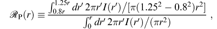
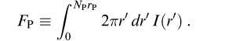

This page provides detailed descriptions of various measures of magnitude and related outputs of the photometry pipelines. We also provide discussion of some methodology. For details of the Photo pipeline processing please read the corresponding EDR paper section. There are also separate pages describing the creation of flat-fields and the photometric flux calibration.
Magnitudes within the SDSS are expressed as inverse hyperbolic sine (or ``asinh'') magnitudes, described in detail by Lupton, Gunn, & Szalay (1999). They are sometimes referred to informally as luptitudes . The transformation from linear flux measurements to asinh magnitudes is designed to be virtually identical to the standard astronomical magnitude at high signal-to-noise ratio, but to behave reasonably at low signal-to-noise ratio and even at negative values of flux, where the logarithm in the Pogson magnitude fails. This allows us to measure a flux even in the absence of a formal detection; we quote no upper limits in our photometry.
The asinh magnitudes are characterized by a softening parameter b, the typical 1-sigma noise of the sky in a PSF aperture in 1'' seeing. The relation between detected flux f and asinh magnitude m is:
Here, f0 is given by the classical zero point of the magnitude scale, i.e., f0 is the flux of an object with conventional magnitude of zero. The quantity b is measured relative to f0, and thus is dimensionless; it is given in the table of asinh softening parameters (Table 21 in the EDR paper), along with the asinh magnitude associated with a zero flux object. The table also lists the flux corresponding to 10f0, above which the asinh magnitude and the traditional logarithmic magnitude differ by less than 1% in flux. For details on converting asinh magnitudes to other flux measures, see converting counts to magnitudes.
The flux contained within the aperture of a spectroscopic fiber (3" in diameter) is calculated in each band.
The computation of model magnitudes in the DR1 and EDR processing had a serious bug which implied that model magnitudes from the EDR and DR1 should not be used for scientific analysis. The imaging data have all been processed through a new version of the SDSS imaging pipeline, that most importantly fixes an error in the model fits to each object. The result is that the model magnitude is now a good proxy for point spread function (PSF) magnitude for point sources, and Petrosian magnitude (which have larger errors than model magnitude) for extended sources.
Just as the PSF magnitudes are optimal measures of the fluxes of stars, the optimal measure of the flux of a galaxy would use a matched galaxy model. With this in mind, the code fits two models to the two-dimensional image of each object in each band:
Each model has an arbitrary axis ratio and position angle. Although for large objects it is possible and even desirable to fit more complicated models (e.g., bulge plus disk), the computational expense to compute them is not justified for the majority of the detected objects. The models are convolved with a double-Gaussian fit to the PSF, which is provided by psp. Residuals between the double-Gaussian and the full KL PSF model are added on for just the central PSF component of the image. These fitting procedures yield the quantities
Note that these quantities correctly model the effects of the PSF. Errors for each of the last two quantities (which are based only on photon statistics) are also reported. We apply aperture corrections to make these model magnitudes equal the PSF magnitudes in the case of an unresolved object.
The code now also takes the best fit exponential and de Vaucouleurs fits in each band and asks for the linear combination of the two that best fits the image. The coefficient (clipped between zero and one) of the de Vaucouleurs term is stored in the quantity fracDeV in the CAS. (In the flat files of the DAS, this parameter is misleadingly termed fracPSF.) This allows us to define a composite flux:
where FdeV and Fexp are the de Vaucouleurs and exponential fluxes (not magnitudes) of the object in question. The magnitude derived from Fcomposite is referred to below as the cmodel magnitude (as distinct from the model magnitude, which is based on the better-fitting of the exponential and de Vaucouleurs models in the r band).
In order to measure unbiased colors of galaxies, we measure their flux through equivalent apertures in all bands. We choose the model (exponential or deVaucouleurs) of higher likelihood in the r filter, and apply that model (i.e., allowing only the amplitude to vary) in the other bands after convolving with the appropriate PSF in each band. The resulting magnitudes are termed modelMag. The resulting estimate of galaxy color will be unbiased in the absence of color gradients. Systematic differences from Petrosian colors are in fact often seen due to color gradients, in which case the concept of a global galaxy color is somewhat ambiguous. For faint galaxies, the model colors have appreciably higher signal-to-noise ratio than do the Petrosian colors.
There is now excellent agreement between cmodel and Petrosian magnitudes of galaxies, and cmodel and PSF magnitudes of stars. Cmodel and Petrosian magnitudes are not expected to be identical, of course; as Strauss et al. (2002) describe, the Petrosian aperture excludes the outer parts of galaxy profiles, especially for elliptical galaxies. As a consequence, there is an offset of 0.05-0.1 mag between cmodel and Petrosian magnitudes of bright galaxies, depending on the photometric bandpass and the type of galaxy. The rms scatter between model and Petrosian magnitudes at the bright end is now between 0.05 and 0.08 magnitudes, depending on bandpass; the scatter between cmodel and Petrosian magnitudes for galaxies is smaller, 0.03 to 0.05 magnitudes. For comparison, the code that was used in the EDR and DR1 had scatters of 0.1 mag and greater, with much more significant offsets.
The cmodel and PSF magnitudes of stars are in good agreement (they are forced to be identical in the mean by aperture corrections, as was true in older versions of the pipeline). The rms scatter between model and PSF magnitudes for stars is much reduced, going from 0.03 mag to 0.02 magnitudes, the exact values depending on bandpass. In the EDR and DR1, star-galaxy separation was based on the difference between model and PSF magnitudes. We now do star-galaxy separation using the difference between cmodel and PSF magnitudes, with the threshold at the same value (0.145 magnitudes).
Due to the way in which model fits are carried out, there is some weak discretization of model parameters, especially r_exp and r_deV. This is yet to be fixed. Two other issues (negative axis ratios, and bad model mags for bright objects) have been fixed since the EDR.
Stored as petroMag. For galaxy photometry, measuring flux is more difficult than for stars, because galaxies do not all have the same radial surface brightness profile, and have no sharp edges. In order to avoid biases, we wish to measure a constant fraction of the total light, independent of the position and distance of the object. To satisfy these requirements, the SDSS has adopted a modified form of the Petrosian (1976) system, measuring galaxy fluxes within a circular aperture whose radius is defined by the shape of the azimuthally averaged light profile.
We define the ``Petrosian ratio'' RP at a
radius r from the center of an object to be the ratio of the
local surface brightness in an annulus at r to the mean
surface brightness within r, as described by Blanton et al. 2001a, Yasuda et al. 2001:

where I(r) is the azimuthally averaged surface brightness profile.
The Petrosian radius rP is defined as
the radius at which RP(rP) equals some
specified value RP,lim, set to 0.2 in our
case. The Petrosian flux in any band is then defined as the flux
within a certain number NP (equal to 2.0 in
our case) of r Petrosian radii:

In the SDSS
five-band photometry, the aperture in all bands is set by the profile
of the galaxy in the r band alone. This procedure ensures
that the color measured by comparing the Petrosian flux
FP in different bands is measured through a
consistent aperture.
The aperture 2rP is large enough to contain nearly all of the flux for typical galaxy profiles, but small enough that the sky noise in FP is small. Thus, even substantial errors in rP cause only small errors in the Petrosian flux (typical statistical errors near the spectroscopic flux limit of r ~17.7 are < 5%), although these errors are correlated.
The Petrosian radius in each band is the parameter petroRad, and the Petrosian magnitude in each band (calculated, remember, using only petroRad for the r band) is the parameter petroMag.
In practice, there are a number of complications associated with this definition, because noise, substructure, and the finite size of objects can cause objects to have no Petrosian radius, or more than one. Those with more than one are flagged as MANYPETRO; the largest one is used. Those with none have NOPETRO set. Most commonly, these objects are faint (r > 20.5 or so); the Petrosian ratio becomes unmeasurable before dropping to the limiting value of 0.2; these have PETROFAINT set and have their ``Petrosian radii'' set to the default value of the larger of 3" or the outermost measured point in the radial profile. Finally, a galaxy with a bright stellar nucleus, such as a Seyfert galaxy, can have a Petrosian radius set by the nucleus alone; in this case, the Petrosian flux misses most of the extended light of the object. This happens quite rarely, but one dramatic example in the EDR data is the Seyfert galaxy NGC 7603 = Arp 092, at RA(2000) = 23:18:56.6, Dec(2000) = +00:14:38.
How well does the Petrosian magnitude perform as a reliable and complete measure of galaxy flux? Theoretically, the Petrosian magnitudes defined here should recover essentially all of the flux of an exponential galaxy profile and about 80% of the flux for a de Vaucouleurs profile. As shown by Blanton et al. (2001a), this fraction is fairly constant with axis ratio, while as galaxies become smaller (due to worse seeing or greater distance) the fraction of light recovered becomes closer to that fraction measured for a typical PSF, about 95% in the case of the SDSS. This implies that the fraction of flux measured for exponential profiles decreases while the fraction of flux measured for deVaucouleurs profiles increases as a function of distance. However, for galaxies in the spectroscopic sample (r<17.7), these effects are small; the Petrosian radius measured by frames is extraordinarily constant in physical size as a function of redshift.
Stored as psfMag. For isolated stars, which are well-described by the point spread function (PSF), the optimal measure of the total flux is determined by fitting a PSF model to the object. In practice, we do this by sync-shifting the image of a star so that it is exactly centered on a pixel, and then fitting a Gaussian model of the PSF to it. This fit is carried out on the local PSF KL model at each position as well; the difference between the two is then a local aperture correction, which gives a corrected PSF magnitude. Finally, we use bright stars to determine a further aperture correction to a radius of 7.4'' as a function of seeing, and apply this to each frame based on its seeing. This involved procedure is necessary to take into account the full variation of the PSF across the field, including the low signal-to-noise ratio wings. Empirically, this reduces the seeing-dependence of the photometry to below 0.02 mag for seeing as poor as 2''. The resulting magnitude is stored in the quantity psfMag. The flag PSF_FLUX_INTERP warns that the PSF photometry might be suspect. The flag BAD_COUNTS_ERROR warns that because of interpolated pixels, the error may be under-estimated.
Reddening corrections in magnitudes at the position of each object, reddening, are computed following Schlegel, Finkbeiner & Davis (1998). These corrections are not applied to the magnitudes in the databases. Conversions from E(B-V) to total extinction Alambda, assuming a z=0 elliptical galaxy spectral energy distribution, are tabulated in Table 22 of the EDR Paper.
Faced with this array of different magnitude measurements to choose from, which one is appropriate in which circumstances? We cannot give any guarantees of what is appropriate for the science you want to do, but here we present some examples, where we use the general guideline that one usually wants to maximize some combination of signal-to-noise ratio, fraction of the total flux included, and freedom from systematic variations with observing conditions and distance.
Given the excellent agreement between cmodel magnitudes (see cmodel magnitudes above) and PSF magnitudes for point sources, and between cmodel magnitudes and Petrosian magnitudes (albeit with intrinsic offsets due to aperture corrections) for galaxies, the cmodel magnitude is now an adequate proxy to use as a universal magnitude for all types of objects. As it is approximately a matched aperture to a galaxy, it has the great advantage over Petrosian magnitudes, in particular, of having close to optimal noise properties.
Of course, it would not be appropriate to study the evolution of galaxies and their colors by using Petrosian magnitudes for bright galaxies, and model magnitudes for faint galaxies.
Finally, we note that azimuthally-averaged radial profiles are also provided, as described below, and can easily be used to create circular aperture magnitudes of any desired type. For instance, to study a large dynamic range of galaxy fluxes, one could measure alternative Petrosian magnitudes with parameters tuned such that the Petrosian flux includes a small fraction of the total flux, but yields higher signal-to-noise ratio measurements at faint magnitudes.
The frames pipeline extracts an azimuthally-averaged radial surface brightness profile. In the catalogs, it is given as the average surface brightness in a series of annuli. This quantity is in units of ``maggies'' per square arcsec, where a maggie is a linear measure of flux; one maggie has an AB magnitude of 0 (thus a surface brightness of 20 mag/square arcsec corresponds to 10-8 maggies per square arcsec). The number of annuli for which there is a measurable signal is listed as nprof, the mean surface brightness is listed as profMean, and the error is listed as profErr. This error includes both photon noise, and the small-scale ``bumpiness'' in the counts as a function of azimuthal angle.
When converting the profMean values to a local surface brightness, it is not the best approach to assign the mean surface brightness to some radius within the annulus and then linearly interpolate between radial bins. Do not use smoothing splines, as they will not go through the points in the cumulative profile and thus (obviously) will not conserve flux. What frames does, e.g., in determining the Petrosian ratio, is to fit a taut spline to the cumulative profile and then differentiate that spline fit, after transforming both the radii and cumulative profiles with asinh functions. We recommend doing the same here.
The annuli used are:
| Aperture | Radius (pixels) | Radius (arcsec) | Area (pixels) |
|---|---|---|---|
| 1 | 0.56 | 0.23 | 1 |
| 2 | 1.69 | 0.68 | 9 |
| 3 | 2.58 | 1.03 | 21 |
| 4 | 4.41 | 1.76 | 61 |
| 5 | 7.51 | 3.00 | 177 |
| 6 | 11.58 | 4.63 | 421 |
| 7 | 18.58 | 7.43 | 1085 |
| 8 | 28.55 | 11.42 | 2561 |
| 9 | 45.50 | 18.20 | 6505 |
| 10 | 70.15 | 28.20 | 15619 |
| 11 | 110.50 | 44.21 | 38381 |
| 12 | 172.50 | 69.00 | 93475 |
| 13 | 269.50 | 107.81 | 228207 |
| 14 | 420.50 | 168.20 | 555525 |
| 15 | 657.50 | 263.00 | 1358149 |